・呉の戦災
２．主な空襲
・呉市街地
呉市街地夜間無差別大空襲 (1945年7月1-2日)
ーー呉市史上で最大の火災、犠牲者およそ2000人ーー
日本の大都市のほとんどを焼き尽くしたB29部隊は、6月中旬から中小都市の空襲を開始しました。呉はその重要な目標の一つとして選ばれ、B29部隊の「最大努力」による爆撃で、ついに市街地が焼き払われてしまったのです。
B29が、曇り空の呉上空に達し第一弾を投下したのは7月2日の午前0時2分でした。燃え上がった炎を目印にしてB29は次々と呉市街地上空に侵入し、すりばち状の呉市街地の周辺から中心部へと焼夷弾を投下していきました。
周辺部を焼かれて、市民は逃げ道を封じられ、防空壕に逃げ込んだ人たちも、猛烈な火炎や吹き込む煙にまかれて蒸し焼き状態になり、無残な死をとげました。
呉を襲ったB29は合計152機、全部で16万454発(1081･7トン)もの焼夷弾が投下された空襲は、午前2時5分まで続けられました。 この空襲で呉市街地は焼け野原となり、犠牲者は2000人以上ともいわれます。約337ヘクタールが焼失し、12万5千もの人が家を失いました。B29部隊の「最大努力」によるこの空襲は、呉市が始まって以来の大火災を引き起こし、市民の生命を奪って、くらしを破壊し、街の景色を一変させたのです。
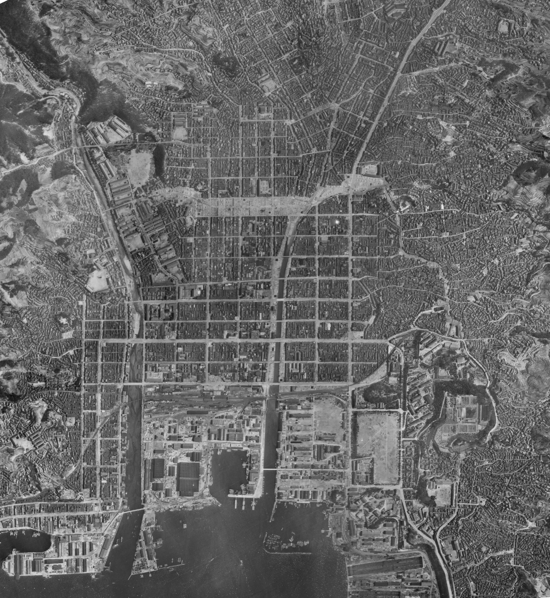
空襲前の呉市 1945（昭和20）年4月12日撮影
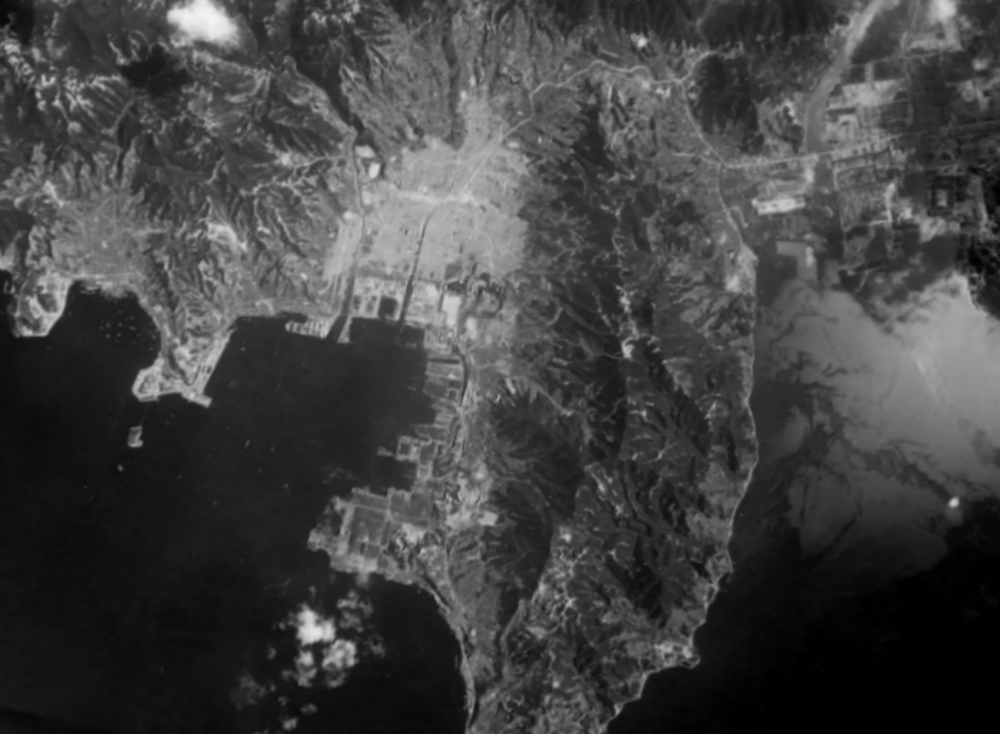
空襲後の呉市
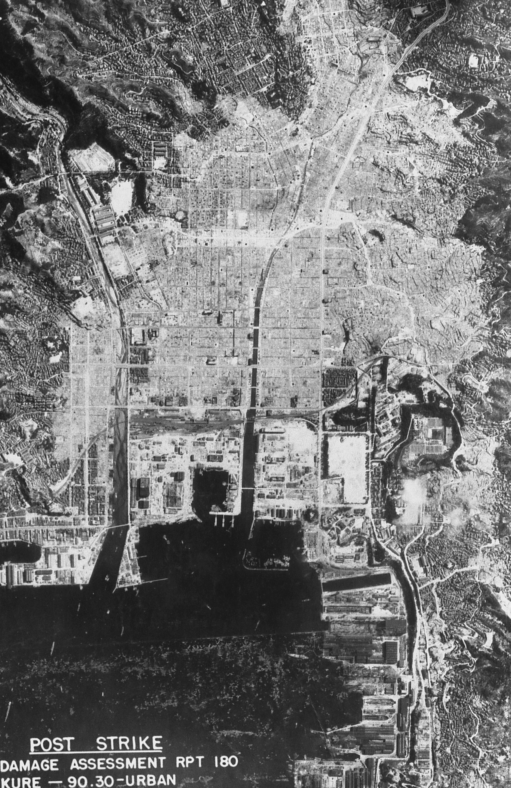
灰色が焼失地域 1945（昭和20）年8月7日撮影
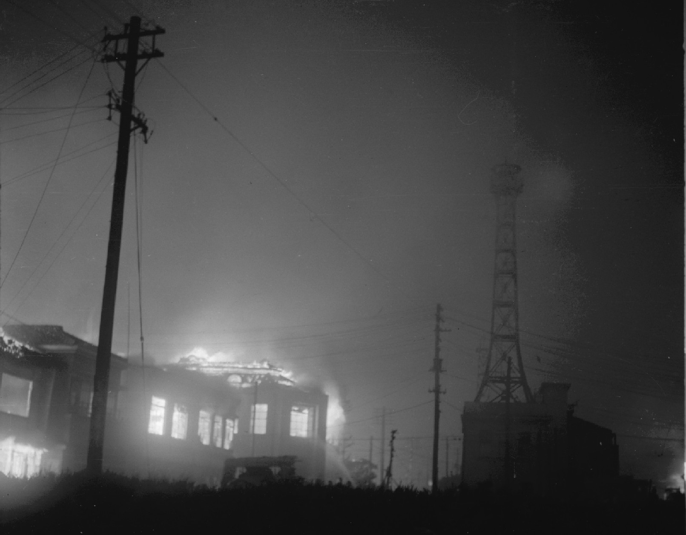
燃える呉警察署への消火活動（稲田写場提供）
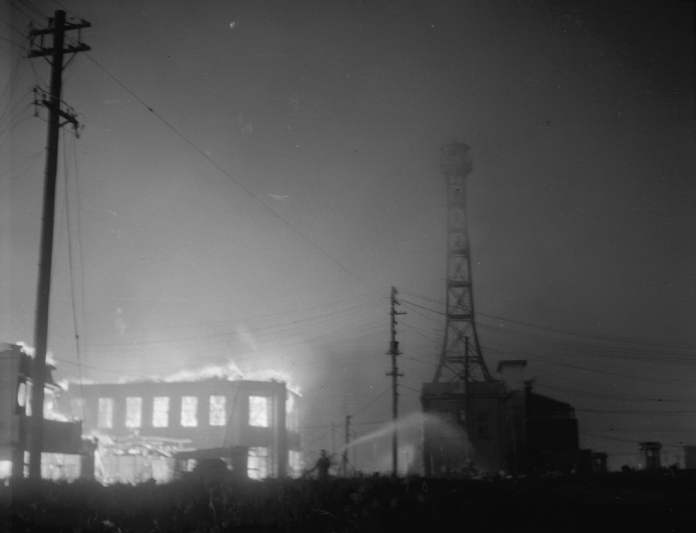
呉消防署への消火活動、此処だけは死守し、焼け残った。（稲田写場提供）
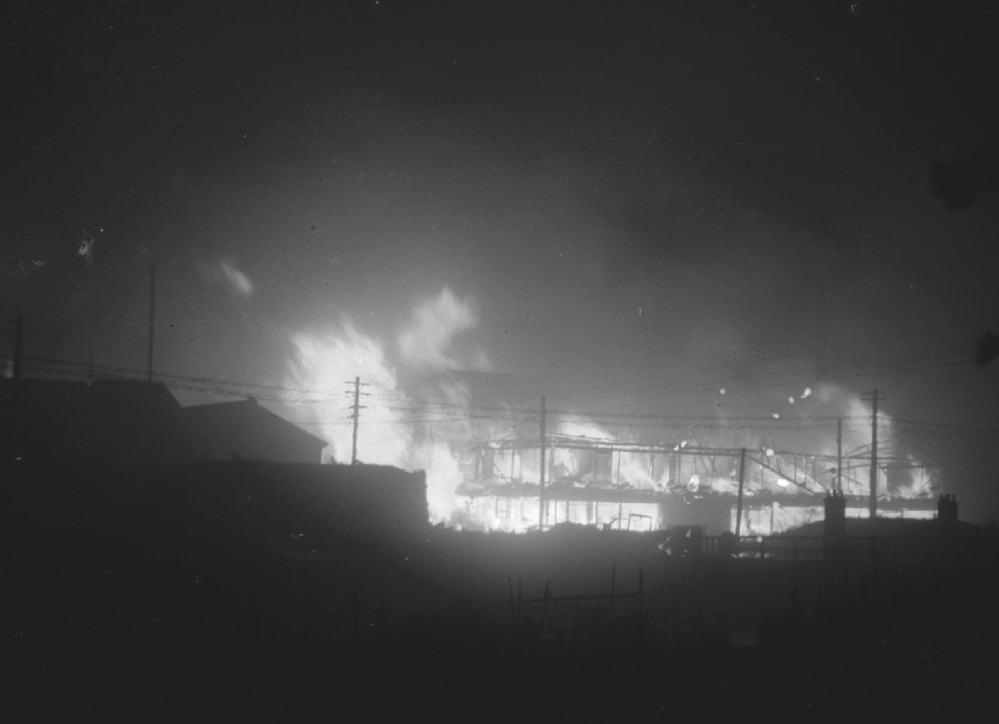
五月橋付近？の猛火１（稲田写場提供）
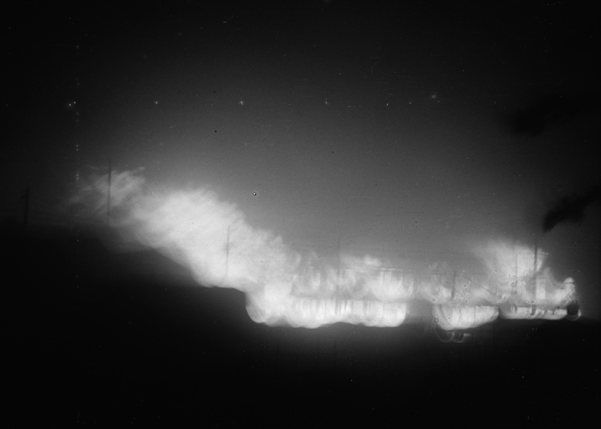
五月橋付近？の猛火２（稲田写場提供）
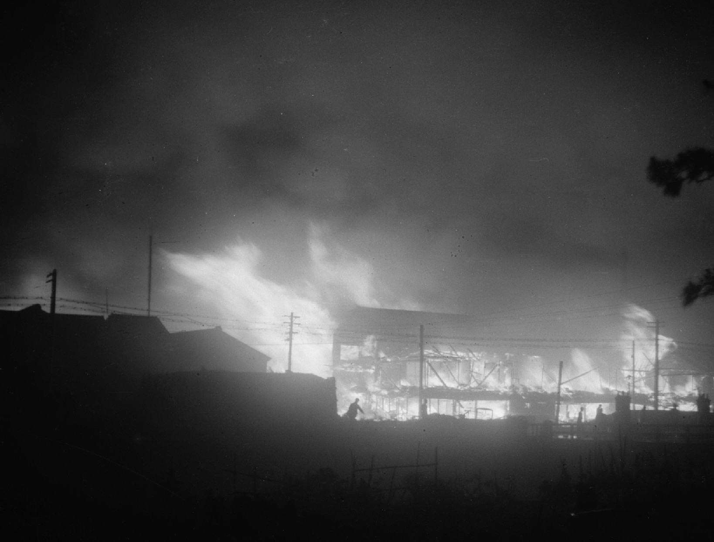
五月橋付近？の猛火３（稲田写場提供）
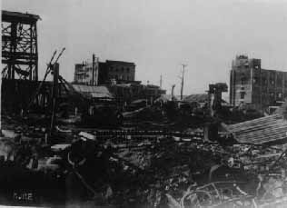
呉市役所跡
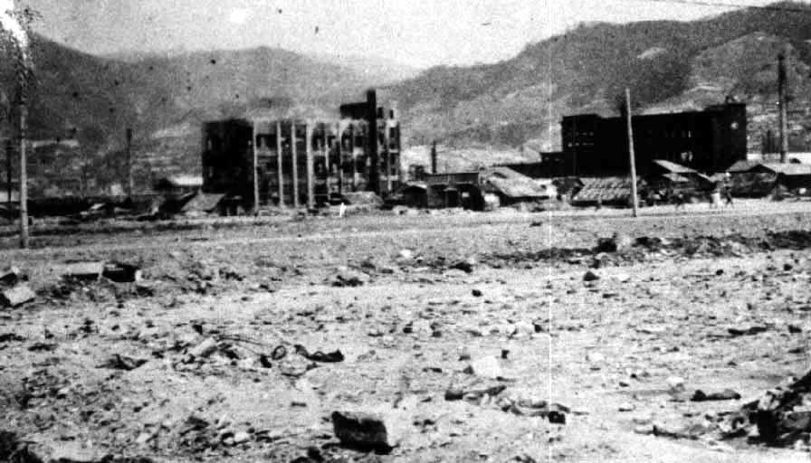
呉市役所辺り
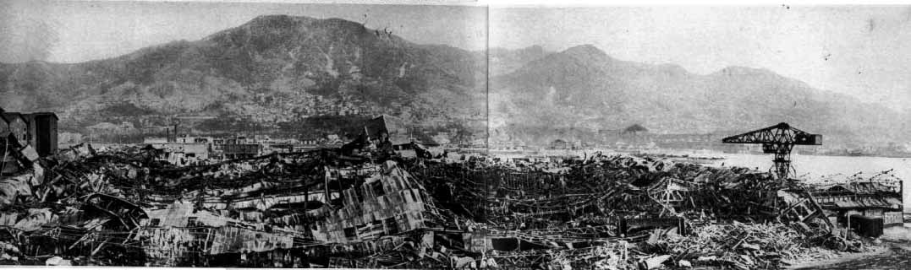
呉廃虚
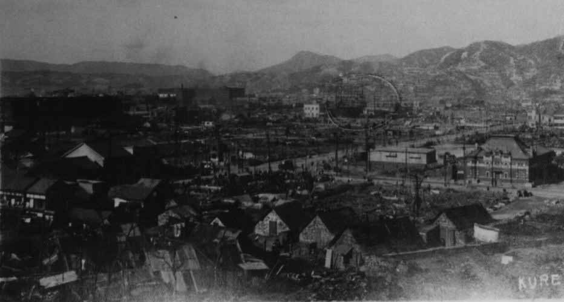
四道路
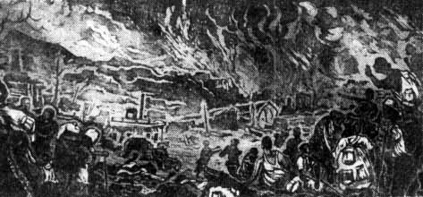
朝井版画
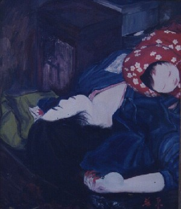
死母子
 呉空襲の時間を示す焼けた時計
呉空襲の時間を示す焼けた時計
米軍『戦術作戦任務報告』にみる爆撃データ
●第58航空回の53機のB29が、高度約3140メートル(1万300フィート)から、 50キロ膠化ガソリン焼夷爆弾M47-A2を1万3622発(470トン)投下した。
●同じく第58航空回の99機のB29が、高度約3140メートル(1万300フィー ト)から、250キロ集束焼夷弾E46を3059発(612トン)投下した。
※250キロ集束焼夷弾E46は、M69焼夷弾を48発内蔵したものである。 換算すると、呉には、M69焼夷弾が14万6832発、投下されたことになる。 合計、152機のB29が焼夷爆弾･焼夷弾を16万454発(1082トン)投下した。
●雲量が8-10あったので、132機がレーダー爆撃を行い、後から来た20機 が有視界爆撃を行った。爆撃効果の判定は、以下のとおりである。
･呉都市地域の損害面積は336.6h(1.3平方マイル)。
アメリカ空軍による呉市街地空襲の方法と経過
1.はじめに
呉は軍都だったために秘密のベールに包まれ、当時の記録もあまりなく、敗戦時には記録を廃棄してしまい、僅かに残った記録も散逸した。
日本の公的な記録があまり無い中で、呉の戦災を明らかにするための資料として有力な資料は、アメリカ軍の記録である。
アメリカ軍は、呉市街を夜間に焼夷爆弾攻撃して、2千人の呉市民を無差別に、残虐に焼き殺した
アメリカ軍の記録では、目標の中心地点を東泉場町に決めて、レーダー爆撃をした。アメリカ軍の攻撃命令書には、攻撃線に沿って、目標地点への爆弾投下だけが書かれており、特に「呉市の周辺部から焼夷弾を投下し、逃げ道をふさいで残虐に殺せ」などとは書かれていない。
しかし、呉市民の多くの体験記は「アメリカの爆撃機は、休山周辺から灰が峰周辺、三条そして中通り、本通りの中心部へと焼夷弾を落とし、
市民の逃げ道をふさいで残虐に焼き殺した。」と書かれている。
Ｂ２９爆撃機がどのように来襲し、焼夷弾がどのように落とされ、どのような状態で、どのように爆発して、どのように人が殺されていったか、
アメリカ軍資料「戦術作戦任務報告」を基に覧てみよう。
2.呉空襲の方法
アメリカ軍の「戦術作戦任務報告」は、第21爆撃機軍団司令官カーチス･E･ルメイ少将が、ワシントンの第20航空軍司令官H･H･アーノルド大将に提出したものである。
呉市街地空襲の戦闘命令･第93号が、1945.7.1、第21爆撃機軍団司令官ルメイ少将から第58航空団に対して発令された
呉空襲の命令を受けた第58航空団は、1945年5月5日の呉市広町の広海軍工廠と広第11海軍航空廠への空襲から、日本本土爆撃に加わった部隊であり、6月22日の呉海軍工廠に対する空襲も行っている。
第58航空団に対して、4群(グループ)で呉都市地域の攻撃を命じていた。
発進は1日午後4時、搭載弾は2群がM47焼夷弾、別の2群はM69焼夷弾の集束弾を、攻撃高度は1万フィート(約3000メートル)から1万300フィート(約3100メートル)、攻撃方法は12機の先導機に導かれた主力部隊により、70分間以内に集中して攻撃するように指示された。
先導機12機は、最良のレーダー爆撃乗組員が配置飛行し、先導機を含め、はじめに離陸する航空機はM47焼夷弾を搭載していた。
アメリカ軍は、呉都市地域を3.26平方マイル(約844ヘクタール)の広さと計算し、1ヘクタール(100メートル四方)あたり約1300キロ、M69(2.7キロ)に換算すると約480発の焼夷弾を投下する計算をした。
呉を爆撃した実数機は152機であった。この152機が合計1096トンの焼夷弾を投下した。B29の搭載可能限度量は1万7000ポンド(7650キロ)、平均は1万5000ポンド(6750キロ)だが、1機あたり約7128キロを積んでいた。
3.焼夷弾による戦略爆撃
呉空襲で使用されたM47A2焼夷弾は正式名称をANーM47A2焼夷弾という100ポンド(45キロ)の炸裂型膠化こうかガソリン焼夷弾であり、M69焼夷弾とは正式名称をANーM69焼夷弾という6ポンド(2.7キロ)の尾部噴射油脂焼夷弾である。
M47はM69よりもはるかに大型であり、投下されると建物の屋根を突き抜け、爆発して即座に大きな火災を起こし、日本側の消火体制を混乱に陥らせることができた。また、この火災が後続機に各目標点を示すのに効果的てあったので、B29の日本本土空襲の際には、必ずと言ってよいほど先導機はこのM47を投下した。
M69は1942年、燃えやすい家屋が密集した日本本土の都市攻撃用としてアメリカ軍が開発した兵器である。
細長い六角形の金属筒で直径8センチ、長さ50センチ、ナパーム剤というゼリー状油脂を充てんし、弾尾には麻布製の長いリボンがついていた。 このM69を24本ずつ2本の束として、つまり48発を内蔵して1個の大型焼夷弾(500ポンドの集束焼夷弾、E46)として、B29に搭載された。
E46集束弾は空中で時限信管によって破裂して、48発のM69に分解した。この時、弾尾のリボンに火がつくので、空中に火の雨が降るように見えた。
信管装置は、M47A2焼夷弾は弾頭に瞬発信管を付け、集束弾は、目標上空5000フィート(約1500メートル)で解束する信管を付けられた。
投下間隔管制装置は、M47A2焼夷弾は100フィート(約30メートル)、集束弾は50フィート(約15メートル)にセットされた。
先導機がM47を投下した後、後続の主力部隊は、6ポンドのM69尾部噴射油脂焼夷弾の集束弾を使用した。
M47で日本側を混乱に追い込んだ後、小型のM69を大量に投下し、目標地域に大火災を誘発させた。
7月1日-2日の空襲では、これら集束弾は目標上空5000フィート(約1500メートル)で解束するように信管を設定していた。
つまり、1500メートル上空から、投下間隔が15メートルおきに、48発に分かれたM69が降り注ぐようにセットされていた。
4.アメリカ空軍の戦略爆撃の方法
１、アメリカは日本に対して空襲を行う際、日本全土を地図上で分割し、番号を付けて、その番号で位置を明示していた。
90は日本を示す番号で、北から順に区分番号を付け、ＫＵＲＥは30なので、呉地区（大竹ー広島ー呉・広）の区分番号は、90-30となる。
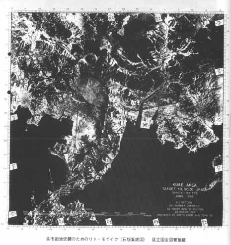
呉市街のリトモザイク レーダー爆撃用の地図。
休山山麓の西側から市街の爆撃中心円に向けて攻撃線を示している。
２、アメリカ軍が作戦で使用した地図写真は、リト・モザイク（石版集成図）という合成写真（照準点参照用集成図）である。
何回かの偵察飛行で、偵察写真を撮り、それを合成して攻撃目標地点を中心にした精密写真を作り、四辺に153の目盛を付け、目盛り値を利用して照準点を指定し、そこに至る攻撃線が記載されている。
攻撃目標照準点の4.000（2キロメートル）フィートの円内に50％の爆弾命中目標を設定してレーダー爆撃を行った。
当時のレーダー爆撃の技術能力では、市街地の周辺部に火の壁を作り、中心部に絨毯爆撃をして、市民を惨殺する概念はなかった、と思われる。
通常、高度3千メートルで時速300キロメートルの水平飛行を維持して、攻撃目標の30キロメートル手前でレーダーを利用して攻撃線から侵入し、爆弾を投下した。爆弾投下後、おおよそ、３０秒後に、２.５キロメートル～３キロメートル先の目標地点に着地し、爆発した。
写真周辺の目盛りは、レーダー爆撃の照準点を定めるための座標である。
Ａ 広第十一空廠爆撃の照準点・・・107（横軸） 069（縦軸）
Ｂ 呉海軍工廠爆撃の照準点・・・・037（横軸） 055（縦軸）
Ｃ 呉市街地爆撃の照準点・・・・・015（横軸） 088（縦軸）
（呉市街の爆撃中心点は、東泉場町・現在の栄町商店街南辺り）
休山南西部から中心点に向けて攻撃線が示されている。
5.呉空襲の進路
呉空襲のために発進したのは、第58航空団先導機12機、主力部隊148機、レーダー対策機4機、特別救助機2機、合計166機である。
第58航空団の一番機がテニアン西飛行場を飛び立ったのは、1日午後4時、最終機は午後5時32分で、片道約2500キロの航程であった。
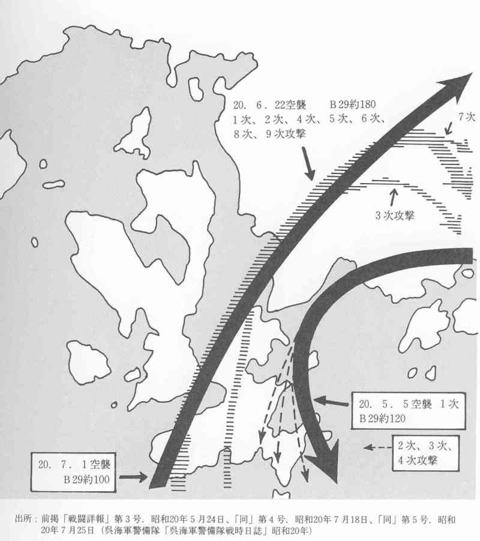
空襲経路
テニアン基山を発進した第58航空団の166機は、硫黄島上空を経て北西進し、高知県足摺岬西方約40キロの沖ノ島(北緯32度43分.東経132度33分)を陸地確認点として、四国西端部をかすめて広島湾沖に向けて北西進し、山口県防予諸島の八島(北緯33度46分.東経132度9分)を進入点とし、攻撃線を北東の方向にある呉市に向け、休山の南西上空に侵入してきた。
レーダー飛行は高度1万フィートの航路で行われた。これは、普通対空火器･中口径砲が、この高度では完全に無力であると思われ、島からのレーダー妨害を避けるためであった。
対空砲火を避け、攻撃目標ヘの接近は、山に囲まれた地形のために、
休山連山に沿って市街地南西に面している海側から侵入した。
陸地確認点である沖ノ島に到達しにのは、一番機が1日午後11時34分、最終機が2日午前1時40分、レーダー爆撃による爆弾投下地点・防予諸島の柱島の上空1万300フィート(約3100メートル)の高度から投弾したのは、
2日午前0時2分から午前2時5分にかけてであった。
攻撃地域の中心（照準点＝平均弾着点）は、旧新泉場町付近で、一帯は、市場が立ち並ぶ呉市の商業の中心地域、民家の密集地域であった。
6.日本軍の防御反撃
遭遇した最大の困難は、空爆の間、有視界爆撃を妨げた目標地域を覆う雲量8～10の雲で、それは攻撃時期より幾分早くからあった。
爆撃は、基本的にはレーダーによってなきれた。しかし、遅れて爆撃した20機は雲の切れ間を通して有視界爆撃を行うことができた。目標上空を覆うひどい煙と熱は激しく、焼夷弾投下地点においては水平飛行を維持するのに努力を要する事態に遭遇した。3000メートル余りの上空にあったB29が水平飛行の維持に困難をきたしたことから、空襲による火災の程度が想像できる。
B29各機の呉上空での滞空時間は9分間で、レーダー爆撃および一部（爆撃漏れの所）を有視界爆撃のうえ、呉周辺および広島の防衛陣地を避けるため上空で右旋回し、灰が峰・野呂山の北側を回って、四国中部上空を通って硫黄島・テニアンヘと帰還した。テニアン基地に帰投したのは2日午前6時10分から午前9時13分にかけての間である。
往復14-15時間に及ぶ長距離爆撃飛行であった。
この空襲に対する日本側の反撃はどのようであったのだろうか。
第21爆撃機軍団は、呉に関して、敵の戦闘機の反撃は「15機から20機の戦闘機がせいぜい取るに足らない抵抗をするだけと」と推測していた。
敵の対空砲火については、呉は「132の重砲、83の中口径砲、15～20の探照灯」に守られ、「今回が呉に対する最初の夜間攻撃であったため、探照灯の正しい有効性を伴った普通高射砲だけはその夜予期された」。また、「陸上の対空砲火陣に加え、呉湾およびその周辺にかなり大きな日本艦隊が存在している」として、それを「戦艦1、空母2、重巡1、軽巡1、駆逐艦数隻」と分析していた。
そして実際の反撃は次のようであった。
「敵の戦闘機の反撃」は「全作戦任務中、迎撃機は6機が攻撃してきた」。「敵の対空砲火」については「全作戦任務中において高射砲によるB29の損失はなく、5機が損傷した」と記きれている。「目標途上、臼杵、八幡、宇和島、前島、仁方、倉橋島、西能美島で、貧弱で不正確な重砲に遭遇」し、「目標上空での高射砲は貧弱で不正確であり」、「目標からの帰途、松山、新居浜、桜井、西条で、貧弱で不正確な重砲に遭遇した」。
呉湾の海軍艦艇から対空射撃が行われた記録はない。
日本軍の反撃はまったくといってよいほど効果がなかった。
B29・2機が失われたが、いずれも日本軍の反撃によるものではなかった。
この全作戦任務中、潜水艦6隻、洋上艦艇4隻、救助機7機をはじめ(以上海軍から)、第313航空団を除く各航空団からそれぞれ1～2機、合計6機(実際に派遣されたのは5機)のB29が特別救助機として派遣きれる、アメリカ陸海軍共同のB29搭乗員救助作戦が実施された。
マリアナ基地と日本本土間の往復距離は長く、太平洋上での気象も穏やかではないため、B29の故障や事故は多かった。
発進したのは166機であったが、先導機12機のうち1機、主力部隊148機のうち5機の許6機が故障のため作戦実施不能となり、戦線を離脱、残る160機から、レーダー対策機4機と特別救助機2機を除く154機が実際に爆撃に参加したことになる。
トップページに戻る